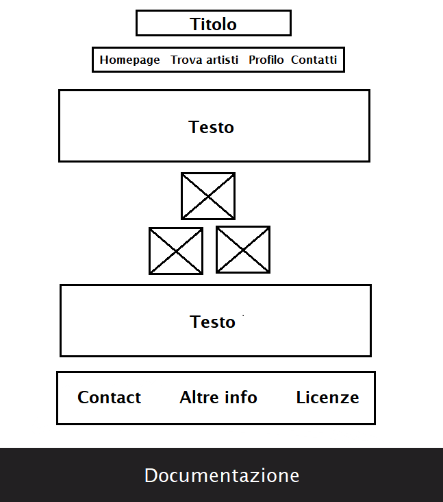
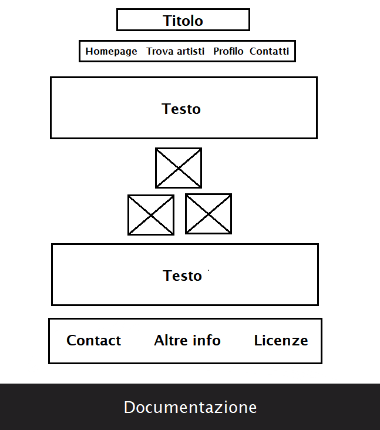

Abstract
Questo sito è stato creato con l’obiettivo di mettere in contatto musicisti, aspiranti tali o comunque chiunque abbia abbia la musica come hobby. Il target principale sono quindi musicisti non professionisti fra i 18 e i 30 anni. Il valore aggiunto del sito sta nell'offrire la possibilità di cercare qualsiasi tipo di figura, da chi suona uno strumento, o offre lezioni, a chi mette a disposizione la propria attrezzatura.
Project Manager Plan
Benchmarking
Obiettivi L’obiettivo è quello di dare la possibilità a chi suona come hobby, o a chi vuole fare della musica il proprio lavoro, di ampliare la rete di contatti con cui condividono la stessa passione. Target utente Il sito è rivolto a ragazzi fra i 18 e i 30 anni, che abbiano come passione la musica Competitors Il competitor principale è Kleisma, un'agenzia artistica digitale che permette agli artisti di mettersi in contatto per iniziare delle collaborazioni, tuttavia essendo un'agenzia è principalmente incentrata sulla promozione degli artisti e di conseguenza pensato per un target di professionisti. Fra i competitors rientrano poi anche Instagram e Facebook, i Social Network più utilizzati, ma che non sono pensati per gli appassionati di musica.
Struttura e layout
Architettura
Wireframe
 
Look and feel

Look and feel
Il layout, i font e i colori hanno lo scopo di conferire al sito una grafica retrò. La scelta di questo tipo di stile è dovuta al fatto di voler evocare un immaginario in cui la musica si affianca alla nostalgia e all'amatorialità. I font usati sono “Broadway” per i titoli e “Lucida Sans” per il testo. I colori principali sono il #222022 e il #88403E, scelti anche perchè riprendono i colori delle immagini del carosello, mentre il testo e le icone sono bianche per la leggibilità sullo sfondo scuro.
Linguaggi e strumenti
Per la creazione del sito sono stati usati i linguaggi di HTML e CSS. A supporto della progettazione web sono stati usati i siti di "Bootstrap" per la programmazione, “Fontawesome” per le icone,“Adobe Color” per la scelta dei colori, “Paint” per l’architettura del sito e wireframe e per tutte le foto ad eccezione di quelle presenti nella homepage che sono state prese dal sito di "UnSplash". Come text editor è stato usato “Visual Studio Code”, per la pubblicazione del sito “Github”, mentre per le indagini statistiche e monitoraggio del sito “Google analytics”.
Communication strategy
Background
VibeMatch si prefigge l'obiettivo di aiutare le persone a trovare qualcuno con cui condividere la propria passione per la musica, sia per chi abbia uno scopo esclusivamente ludico sia per chi invece voglia farne un lavoro. Il nostro valore aggiunto sta proprio nell'offrire un'alternativa nel mercato dei Social Network che sia incentrata sulla musica, ma che non sia pensata per un target di soli specialisti. I competitors sopra citati, infatti, o non sono pensati per ricercare altri appassionati di musica, come nel caso di Instagram e Facebook, che pur essendo molto diffusi non risultano efficaci se si ha l'obiettivo di trovare una figura in particolare, o sono pensati per un target diverso, più incentrato sul costruirsi una carriera, lasciando quindi posto nel mercato per un sito come VibeMatch.
Obiettivi comunicativi
Il progetto si prefigge l'obiettivo di mettere in contatto chi condivide la passione per la musica. Raggiungere 50 visualizzazioni al sito e 20 like al post Instagram del profilo di VibeMatch segnalerebbe l'interesse del target di riferimento.
Target Audience e messaggio
Il sito si rivolge agli appassionati di musica, in particolare a quelli fra i 18 e i 30 anni, che abbiano a che fare con il creare musica. Insegnanti di musica invece, rappresentano il target secondario. Questi gruppi vengono raggiunti attraverso pubblicità e campagne social. Il messaggio trasmesso dal sito è quello di musica inteso come strumento di aggregazione e socializzazione.
Promozione
La promozione del Social avverrà online, attraverso Social Media quali Facebook e soprattutto Instagram che è anche il social più frequentato dal target di VibeMatch, e a livello locale attraverso l'organizzazione di eventi a tema musica con workshop incentrati sulla produzione di contenuti musicali.
Valutazione dei risultati
La promozione del Social avverrà online, attraverso Social Media quali Facebook e soprattutto Instagram che è anche il social più frequentato dal target di VibeMatch, e a livello locale attraverso l'organizzazione di eventi a tema musica con workshop incentrati sulla produzione di contenuti musicali.